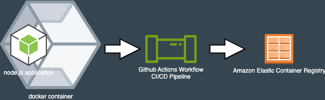
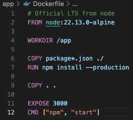
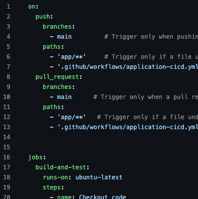

About Me

Hi! Dave York here! I'm a passionate engineer with a love for automation, learning new technologies,
and building solutions to everyday problems. I enjoy working on both personal and professional
projects that blend creativity with practicality.
Check out my LinkedIn!
When I'm not automating, you can find me exploring the outdoors, attending music festivals, taking
on home projects, spending quality time with family, playing video games, and more!
Project Griffin - Node.js + Container + Github Actions + Amazon ECR
Check out the source code
This project will be the foundation to future work - so we're going to focus on the initial framework that will enable us to get the project up and running and enable us to iterate our automation and code quickly
Tech Stack: Node.js with express, containers, a github actions workflow, and Amazon ECR

The Node.js application is a simple express server that will eventually do more, but for now it's our guinea pig
The dockerfile builds a lightweight alpine linux container that will run the node.js application. We'll build and test our code and create our container then ship it up to ECS

The github actions workflow is a simple workflow that will run our tests and build our container. Once the container is built, it will be pushed to Amazon ECR.
